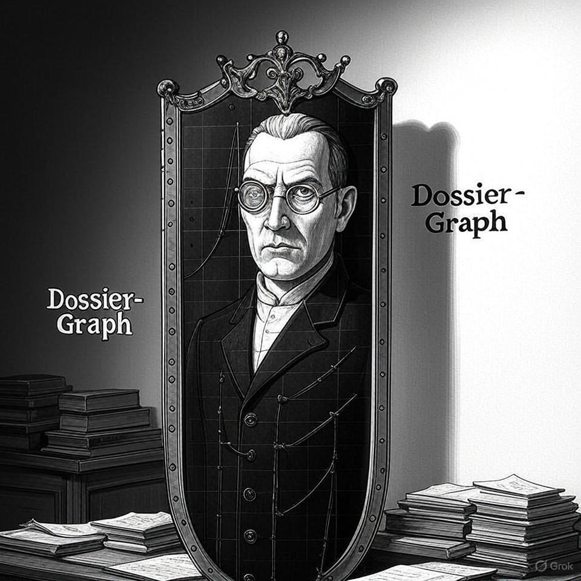

Preface
This project leverages AI-tools on publicly available data generated using a transparently published health technology assessment methodology (Institut für Qualität und Wirtschaftlichkeit im Gesundheitswesen 2023)
“Dossier-Graph”: Build a government-grade, opensource RAG system (Knowledge Graph) for research and education

Store and retrieve documents, tables, and structured knowledge using:
MongoDB for metadata + hierarchy
Qdrant for vector search (via Llama embeddings)
SuperDuper for another orchestration layer
Allow flexible but traceable linking between:
- Main dossiers, Addenda, tables, sections, etc. including complex conceptual linkage
Human-readable AND machine-consumable paths
The project aims to turn a large archive of dossier evaluations into an intelligent, searchable knowledge database using AI. This replaces slow, manual document review with automated extraction, semantic search, and interactive analysis.
Users can ask questions in natural language and receive instant, comprehensive answers across all documents. The solution is fully internal, secure, and compliant with data protection standards. It uses open-source tools, is cost-effective, and can easily expand as more documents are added. The main benefits are faster access to information, better pattern recognition, and preservation of institutional knowledge—all while maintaining full control over the data.
Why it matters
Drug development and regulation as a learning system
Clinical development of new medicinal products is different from many other business models in that it critically depends on voluntary or even altruistic (Jansen 2009) research participation and hence on public trust. “Information gain per unit of accepted research burden” is a useful concept introduced to think about how the current regulatory oversight system learns from past clinical R&D efforts. A prerequisite of earning public trust. Information cannot only be gained from performing clinical research but throughout the entire regulatory process including post-marketing health technology assessment. Hence, research responsibilities to make most out of the available information extends far beyond the publishing study results.

In this spirit the knowledge graph (Dossier-Graph) aims to help rendering the available post-marketing health technology assessment information actionable for gaining deep insights about the current research state to which so many patients voluntarily contributed.
Information gain is increased if state-of-the-art information technology is leveraged at all steps of the drug development and regulation process. This projects contributes to this agenda by providing a AI-based knowledge graph of German HTA reports.
The remainder of this project documentation is written in German.
Found a mistake?
Open peer-review is enabled in this project using hypothes.is. This allows sentence-by-sentence annotation from readers directly on this page. Please feel free to annotate. Both constructive and destructive criticism is highly welcome.
References
This book is in Open Review. I want your feedback to make the book better for you and other readers. To add your annotation, select some text and then click the on the pop-up menu. To see the annotations of others, click the in the upper right hand corner of the page